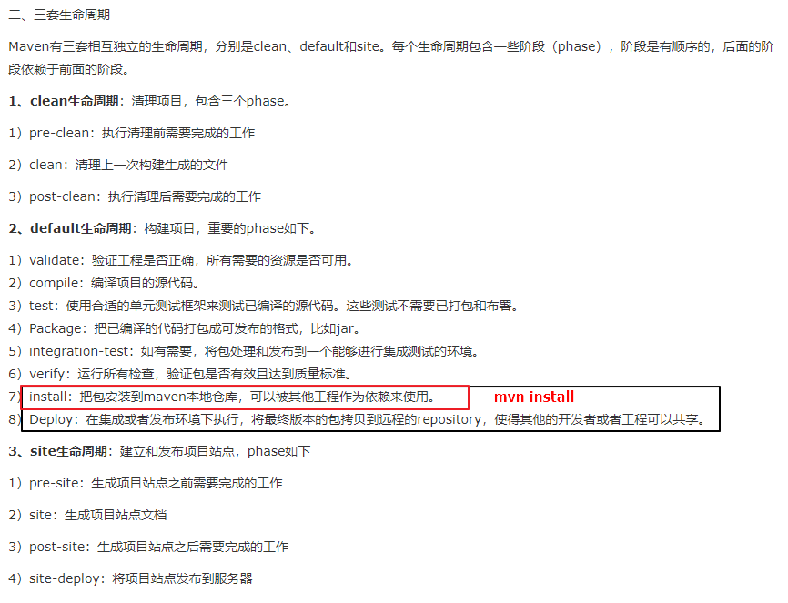

Table of Contents
第三方sdk对接：jar包的安装与发布
以普云打单对接拼多多面单打印功能为例
1.普云打单系统的组成
shops_api:封装第三方接口，供shops_system调用
shops_system：主服务
2.对接流程
2.1获得sdk
2.2mvn install
1.jar
mvn install:install-file -Dfile=./libs/pop-sdk-0.0.5-all.jar -DgroupId=com.lichendt -DartifactId=pinduoduo -Dversion=0.0.5 -Dpackaging=jar
2.jar源码
mvn install:install-file -Dfile=./libs/pop-sdk-0.0.1-all-sources_new.jar -DgroupId=com.lichendt -DartifactId=pdd-waybill -Dversion=0.0.1 -Dpackaging=jar -Dclassifier=sources
2.3shops_api增加dependency
pom.xml文件：
<groupId>com.lichendt</groupId>
<artifactId>shops_api</artifactId>
<version>0.0.1-SNAPSHOT</version>
<dependencies>
<dependency>
<groupId>com.lichendt</groupId>
<artifactId>pinduoduo</artifactId>
<version>0.0.5</version>
</dependency>
2.4增加对应接口与实现类
接口：public interface BillApi {}
实现类：
@Service
public class BillApiImpl implements BillApi{}
2.5mvn install
Shops_api项目上右键，Run as -> Maven install，安装到本地仓库。
2.6shops_system增加shops_api dependency
<dependency>
<groupId>com.lichendt</groupId>
<artifactId>shops_api</artifactId>
<version>0.0.1-SNAPSHOT</version>
</dependency>
2.7shops_system调用0
3.附 maven的生命周期
